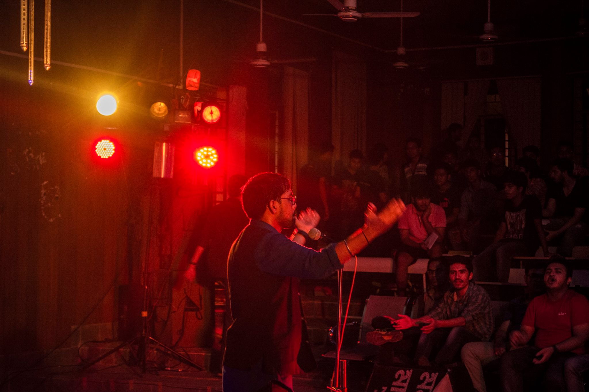
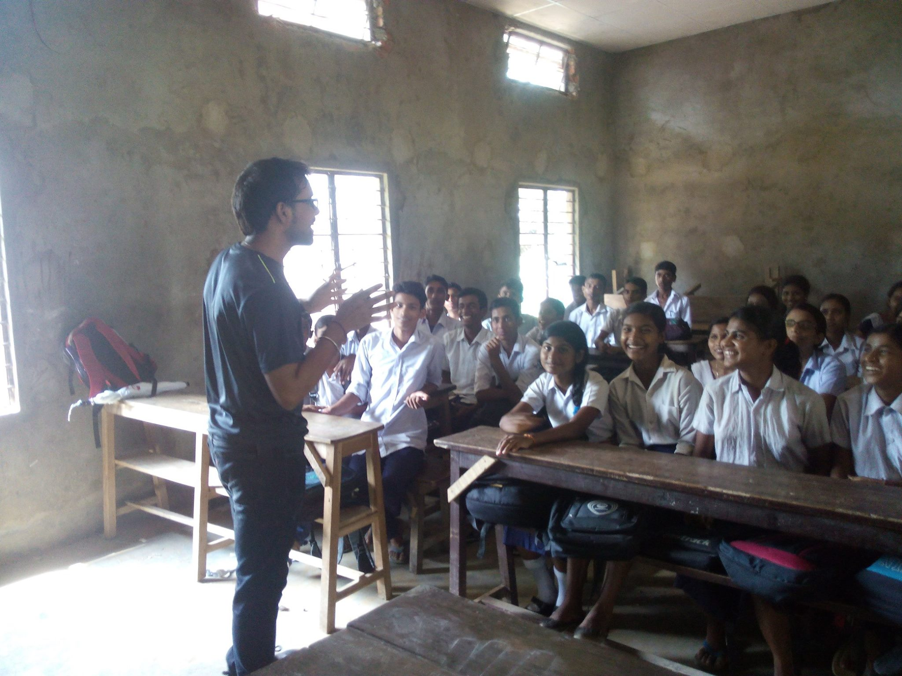
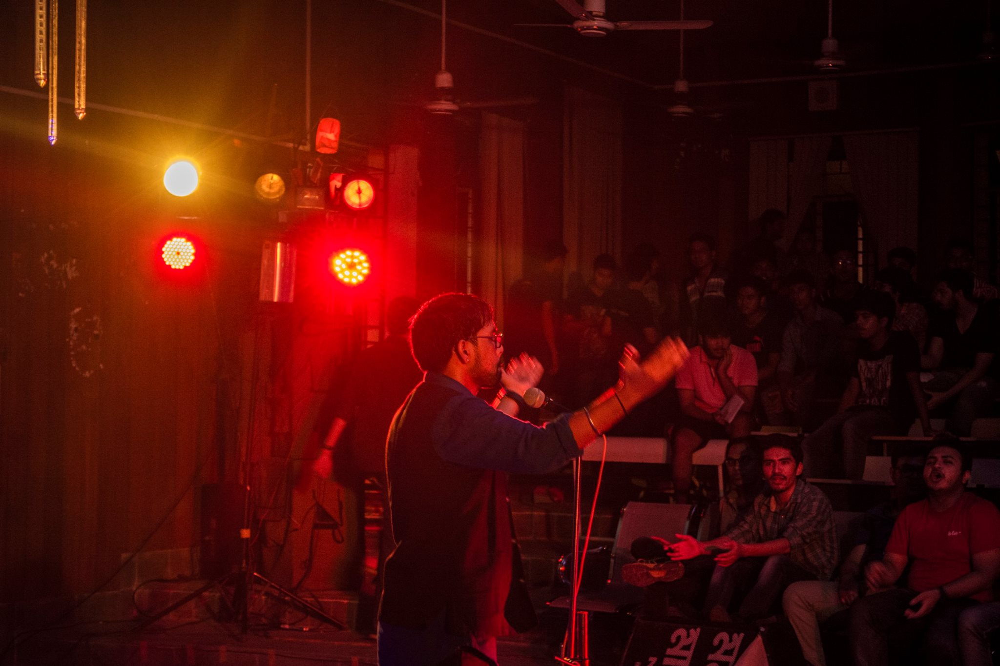
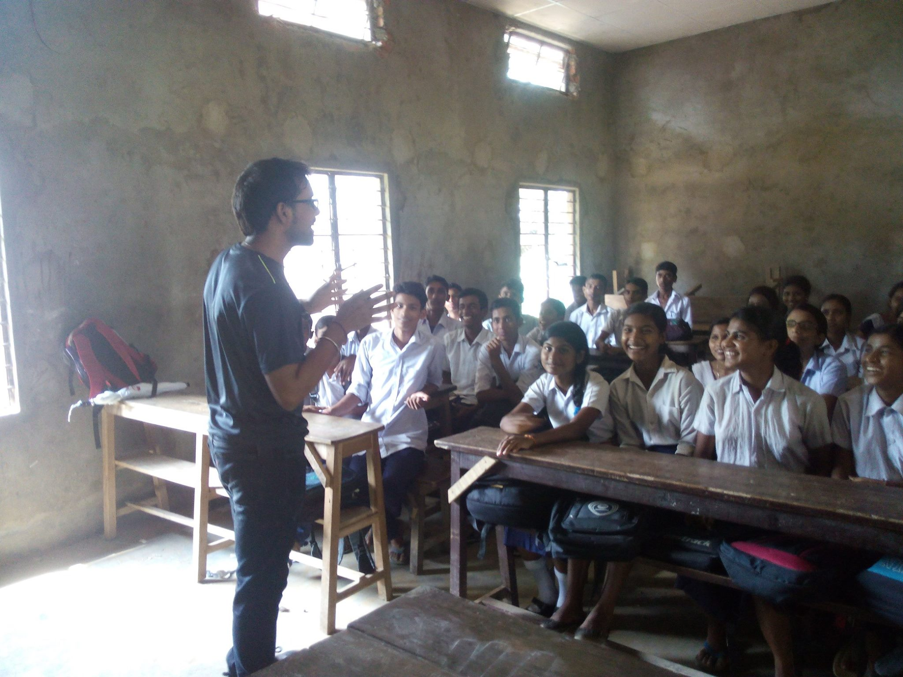
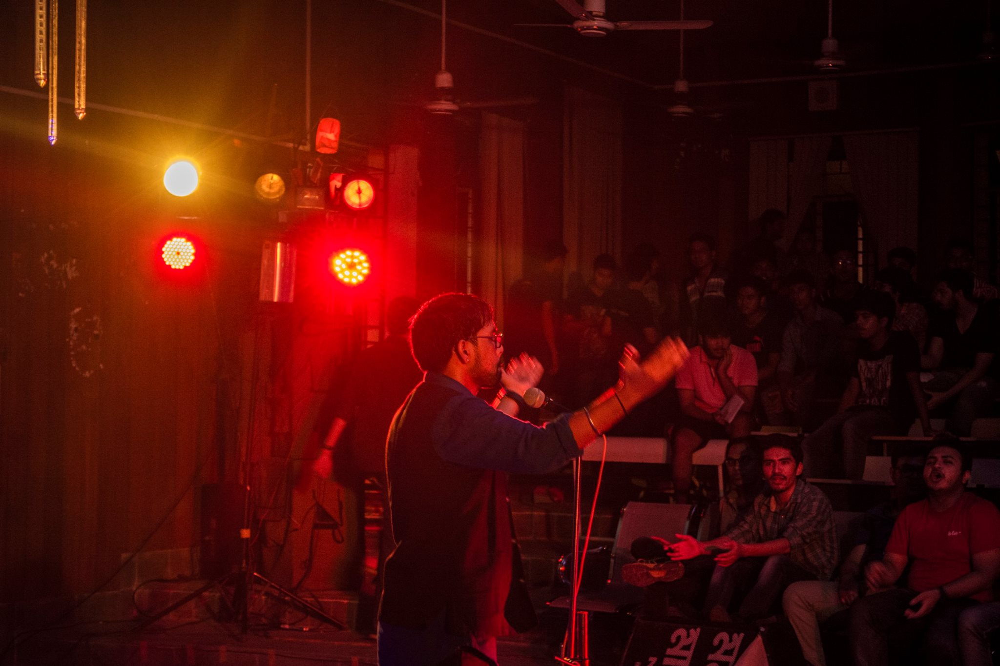
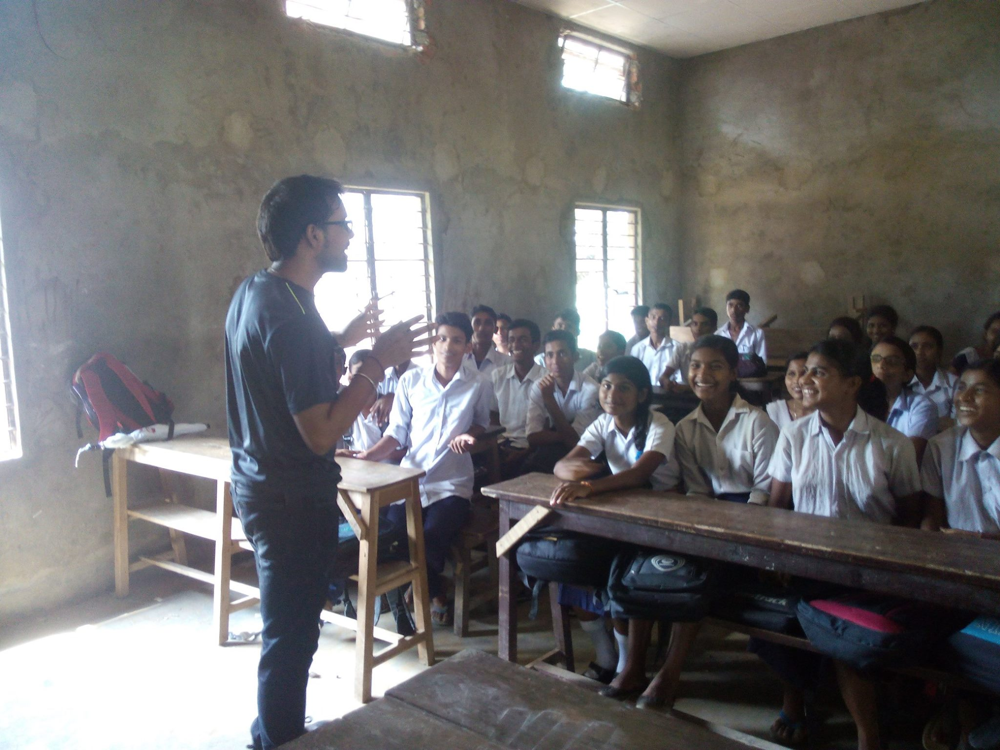
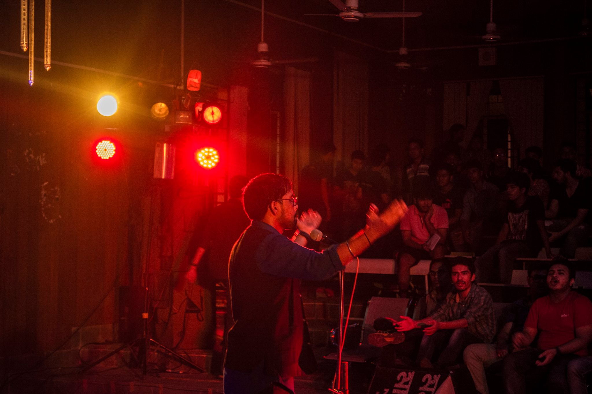
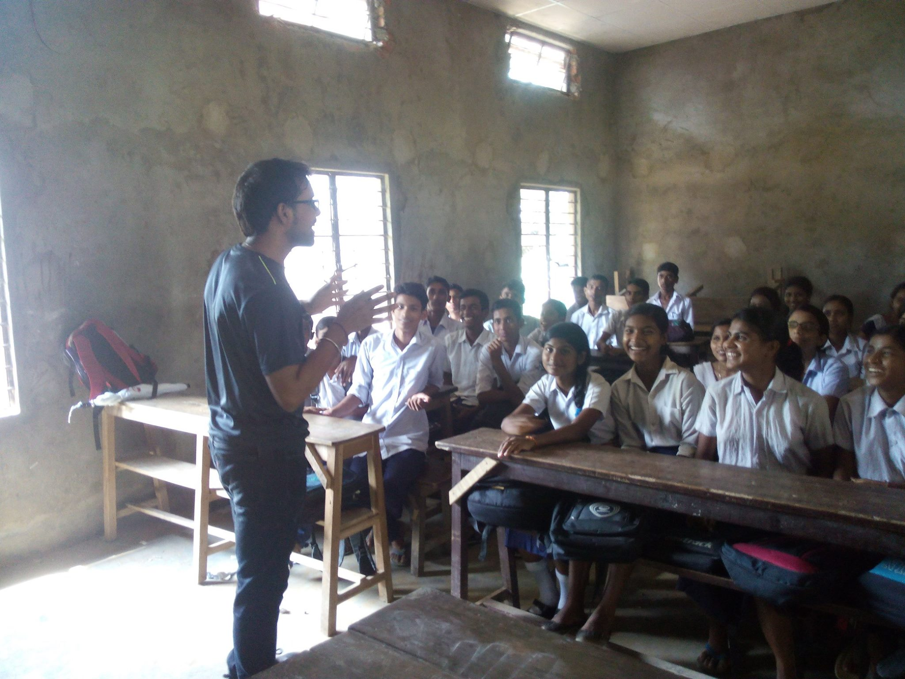

Master of Information Systems Management | Machine Learning & AI Enthusiast
Data isn’t just numbers—it’s a story waiting to be uncovered, and I’m here to write it. As a graduate student at Carnegie Mellon University, I’ve built neural networks from scratch, fine-tuned models for speech recognition, and crafted recommendation systems that make people smile. My expertise in Python, SQL,ML models and frameworks like PyTorch enables me to turn messy data into meaningful insights that drive impact. If you’re looking for someone who sees the art in algorithms and the magic in models, let’s connect!
Email: shubham4@andrew.cmu.edu
LinkedIn: linkedin.com/in/shubh311
GitHub: github.com/shubh311